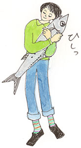
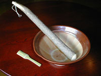

|
肩先のあたりに視線を感じて、思わずふり返る。そこには、こちらを見ているひとなどひとりもいない。おかしいなあ、気のせいかなあ。
久しぶりにデパートの地下食品売り場にやって来ている。勤めていた20代の時分は、しょっちゅうデパートの地下を通ったものだ。そこが帰り道だった。夕方の食品売り場には、それなりの歩き方というのがある。目当てのものがあってもなくても、とにかく通り抜けるだけでも勢いというものが要る。買うそぶりを見せるのが礼儀。そぶりの見せ方はといえば、全身力を入れて、足先にも力をこめてのっしのっしと歩くこと。これが初級。中級ははしょって、いきなり上級はというと、店々を覗くともなく覗きながら、「私、買いますわよ」という気配を漂わせて行く。この覗くともなく覗くというのと、気配の芸当がなかなかむずかしく、初心者にはねえ……。
てなことをしたり顔で話す私だったのにもかかわらず、あれから10年以上も無沙汰をつづける間に、デパートの地下食品売り場というのが様変わりしていたのだった。いきおい私もすっかり場違いなおばさんになってしまった。そも、デパートの地下食品売り場なんていう言い方が古くさいのだそうで、いまは「デパ地下」って言うのですってね。
あちらこちらの名店を覗くと、あら美味しそうな苺のパイ。勇んでひとつ、と思い、ショーウインドウ越しに声をかける。
「５つくださいな」
「大変申しわけありませんが、お並びください」
真っ白の帽子のお姉さんが指さす方をながめると、かなりの行列。 「最後尾はあちらです」
せっかちだし、根性なしだし、私は並んで待ってものを買うということができない。しょんぼりあきらめて歩きはじめ、あたりを見まわすと、そこここに行列が。私が闊歩していた時代には見られなかった光景だ。
ひとの舌が越えたのだろうか。ひとが珍しいものを欲しているのだろうか。たぶん、どちらも当たっていると思うが、しかし何より、食品の世界にもブランドが押し寄せているというのが、行列のいちばんの理由なのではないかしら。有名菓子職人によるシュークリーム。日本中ここでしか買えない何それ。近江牛たっぷりのメンチカツ限定何百個。きのうテレビの何とかいう番組で紹介されたおにぎり。
売り手と買い手双方の勢いに気圧されてよろよろっと押し出されるかたちで、私はいつしかデパ地下のはずれに立っていた。そこは町のスーパーマーケットがちょっと洒落ましたといったような場所。重なったカゴを一個取り上げながら、なんだかふだんの買物みたいだなと思う。
ここで視線がきた。誰も私のことなどみつめていない、目もくれないで行き過ぎているというのに、いったいどうしたことだろう。場違いを言い当てられ押し出されたひがみも手伝って所在がない。（あーあ）。目の前の台の上には魚の干物がならんでいる。
「あ」
私を見上げている相手がいた。目刺しだった。しかも大きな瞳のうるめ鰯。6尾ずつ交互に重なって、私の方をじっと見ている。みつめてもらったのが嬉しくて言うのじゃないが、鰯の丸干しでいちばんだと思うのがこの、うるめ鰯。大きな目がうるんで見えることからその名がついたといわれるだけあって、ちょっとなまめかしい。デパ地下でうるめ鰯をもとめて帰るなんて、いまの私らしいわと、妙に“落ち”がついたような気分で夕方の町に出た。
それにしても、鰯にはずいぶんお世話になっているな。頭をはずして味噌汁のだしをとる煮干しだって片口鰯。このごろ惚れこんでたびたび取りだす瓶詰のアンチョビもまた片口鰯だ。魚屋の店先で生きのいい真鰯と会えば、どうしたってその日はつみれか塩焼きになってしまう。
ええと、きょうはなんだっけ。そうだった、うるめ鰯とスコッチ。

■お近づき汁（つみれ汁）
この変な名前は私がつけました。友人が子どもに鰯のつみれ汁を食べさせたら、「臭い」と言われたとしょげていたのです。そこで考えたのが、この「お近づき汁」。鰯を好きになるのには、ちょっと手間がかかる場合もあります。
鰯………………………………………………………2尾
鶏挽肉………………………………………………100g
味噌（できれば白味噌かそれに近いもの）…大さじ1
塩………………………………………………………少々
片栗粉……………………………………………大さじ1
卵白…………………………………………………1個分
生姜汁…………………………………………………少々
すまし汁 みつば
・鰯は三枚におろして皮をとり（きれいに取る必要はない）、細かく刻んですり鉢でする（またはフードプロセッサーですりつぶす）。
・鶏挽肉をすり鉢または、フードプロセッサーのなかに加え、鰯と一緒にすりつぶす。 ・味噌、塩、片栗粉、卵白、生姜汁を少しずつ混ぜ入れて、さらにすりつぶす。
・小さめの団子にして、さっと茹でておく。あくをとること。
・いつものすまし汁をつくり、団子を入れ、最後にみつばをあしらう。
※鰯と鶏挽肉の割合を変えて、しまいに鰯だけにするというのが、鰯道ですが、鰯にこだわることもない、という向きはこのままどうぞ。
※このすまし汁に里芋と大根、柚子を加えるとボリュームが増し、ひと味ちがった汁がたのしめます。

|